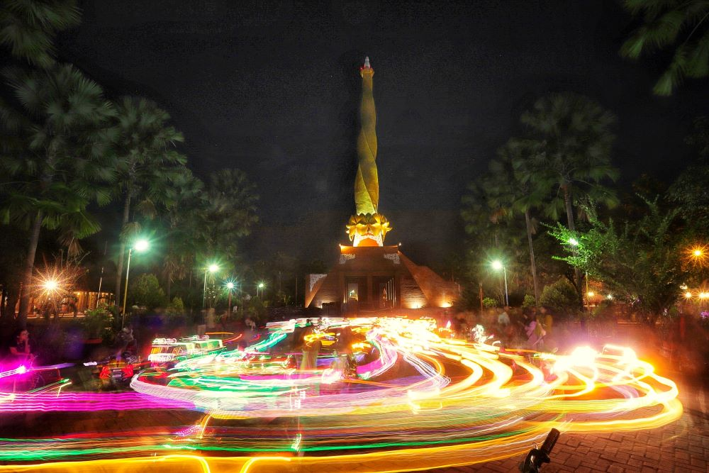

Discover Mojokerto
Mojokerto is a city in East Java, Indonesia, known for its rich historical and cultural heritage. The city and its surrounding areas are home to various historical sites, traditional traditions, and local culinary specialties that reflect the unique character of the region.